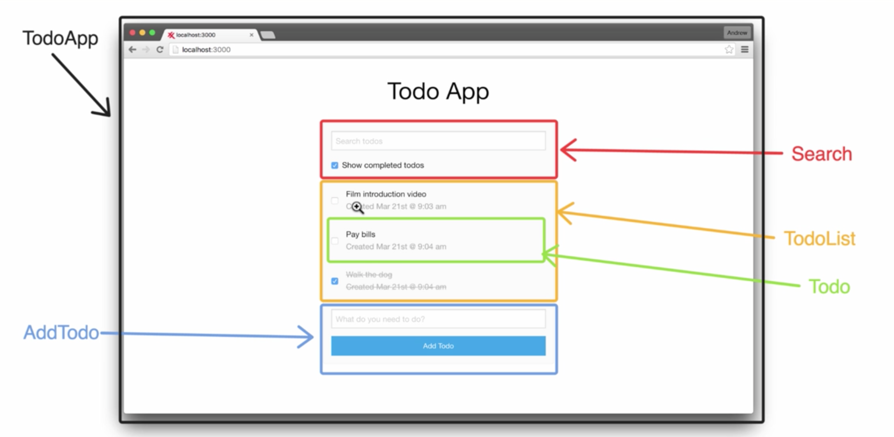

App demo and learning goals
In this app we will make persist a list of todos.We will be able to add new TODOs , changfe them to done status and
filter themby som criteria
This is the component breakdown:

Creating the root component (TodoApp)
This time to start the project we anre not going to uncompress react-boilerplate.zip from the previous chapter.
We will do it in another way. We will checkout react-boilerplate from
Andrejmead Github
We create in our Github account a new repo and we remove remote origins from andrejmead and then
add the new one created in our account.
//Remove origin remote
git remote rm origin
//Add the new one
git remote add origin git@github.com:jescacena/reactjs-todoapp.git
//push to master
git push -u origin master
npm install
node server.js
webpack -w
Now we create our main component TodoApp.jsx. This time we will not being adding alias to webpack config
for every component. There is a configuration, modulesDirectories, we can put in webpack config to atumatically add as alias all the components
in app/components
webpack.config.js
...
resolve: {
root: __dirname,
modulesDirectories : [
'node_modules',
'./app/components',
],
alias: {
applicationStyles: 'app/styles/app.scss'
},
extensions: ['', '.js', '.jsx']
},
...
Rendering Lists in React (TodoList and Todo)
we will be creating two components: Todo and TodoList
First we will create static or mock data en TodoApp to pass it to TodoList component
app/components/TodoApp.jsx
var React = require('react');
var TodoList = require('TodoList');
var TodoApp = React.createClass({
getInitialState: function() {
return {
todos: [
{
id:1,
text: 'Walk the dog'
},
{
id:2,
text: 'Love the killer'
}
]
}
},
render: function() {
var {todos} = this.state;
return (
<div>
<TodoList todos={todos}/>
</div>
);
}
});
module.exports = TodoApp;
To render a dynamic list , we will create a renderTodos method and inside of it , we will use
map javascript function to return an array of Todo components
app/components/TodoList.jsx
var React = require('react');
var Todo = require('Todo');
var TodoList = React.createClass({
render: function() {
var {todos} = this.props;
var renderTodos = () => {
return todos.map((todo)=> {
return (
<Todo key={todo.id}/>
);
});
};
return (
<div>
{renderTodos()}
</div>
);
}
});
module.exports = TodoList;
NOTE: When we render multiple similar components in an iteration , React needs
to have a key attribute so it can keep track of them in a unique form
To render "text" field , we use the ES6 spread operator to pass all the properties of a "todo" element to Todo Component
app/components/TodoList.jsx
...
<Todo key={todo.id} {...todo}/>
...
app/components/Todo.jsx
...
render: function() {
var {text} = this.props;
return (
<div>
{text}
</div>
);
}
...
Testing lists components
We want to check the number of Todo components are rendered by TodoList
it('should render one Todo component for each Todo item', ()=> {
var todos = [{
id:1,
text:'Do something'
},
{
id:2,
text:'Check email'
}
];
var todoList = TestUtils.renderIntoDocument(<TodoList todos={todos}/>);
var todosComponents = TestUtils.scryRenderedComponentsWithType(todoList,Todo);
expect(todosComponents.length).toBe(todos.length);
});
AddTodo component
This is a challenge section
Setting up the filter component
This is a challenge section
We make the TodoSearch.jsx component
Testing the filter component
The Spread operator
With the spread operator you can easily make operations with arrays in order to pass to other functions
//First example: spread array as arguments of a function
function add(a,b) {
return a + b;
}
console.log(add(2,3));
var toAdd = [9,5];
console.log(add(...toAdd));
//SEcond example: combine arrays
var groupA = ['Pepe' , 'Paco'];
var groupB = ['Angela'];
var final = [...groupB,3, ...groupA];
console.log(final);
Wiring up AddTodo
We will code handleAddTodo method. We will be using the spread operator and also a new library for generating an unique id.
npm install node-uuid --save-dev
The node-uuid library generates an universal unique id for each Todos
TodoApp.jsx
var uuid = require('node-uuid');
...
handleAddTodo: function(text) {
this.setState({
todos: [
...this.state.todos,
{
id:uuid(),
text:text
}
]
});
},
TodoApp.test.jsx
it('should add todo to the todos state on handleAddTodo', () => {
var todoText = 'test text';
var todoApp = TestUtils.renderIntoDocument(<TodoApp/>);
todoApp.setState({
todos: []
});
todoApp.handleAddTodo(todoText);
expect(todoApp.state.todos[0].text).toBe(todoText);;
});
Toggling Todos
We will add a new field to Todos: completed
TodoApp.jsx
handleAddTodo: function(text) {
this.setState({
todos: [
...this.state.todos,
{
id:uuid(),
text:text,
completed: false
}
]
});
},
...
handleToggle: function(id) {
var updatedTodos = this.state.todos.map((todo)=>{
if(todo.id === id){
todo.completed = !todo.completed;
}
return todo;
});
this.setState({todos : updatedTodos});
},
...
<TodoList todos={todos} onToggle={this.handleToggle}/>
and passed down a handleToggle handler method from TodoApp to Todo component
Todo.jsx
render: function() {
var {text, id, completed} = this.props;
return (
<div onClick={() => {
this.props.onToggle(id);
}}>
<input type="checkbox" checked={completed}></input>&nbsp;
{text}
</div>
);
}
Testing toggling todos
TodoApp.test.jsx
it('should toggle completed when handleToggle called', ()=> {
var todoApp = TestUtils.renderIntoDocument(<TodoApp/>);
todoApp.setState({
todos: [ {
id:1,
text:'ddfdfd',
completed:false
}]
});
todoApp.handleToggle(1);
expect(todoApp.state.todos[0].completed).toBe(true);;
});
Storing Todos in local storage
We want to persist data even if user refresh the browser
Local storage allows you to store data in your browser
From browser console we can play around with localStorage object. It has some methods like setItem , getItem or remoteItem
We will create a separate file api/TodoAPI.jsx because my app should be decoupled from the way we persist data.
In the future we will be able to switch to another persist platform
var $ = require('jquery');
module.exports = {
setTodos: function(todos) {
if($.isArray(todos)) {
localStorage.setItem('todos', JSON.stringify(todos));
return todos;
}
},
getTodos: function() {
var stringTodos = localStorage.getItem('todos');
var todos = [];
try {
todos = JSON.parse(stringTodos);
} catch(e) {
console.log("Error parsing");
}
if($.isArray(todos)) {
return todos;
} else {
return [];
}
}
};
TodoApp.jsx
var TodoAPI = require('TodoAPI');
...
getInitialState: function() {
return {
showCompleted:false,
searchText:"",
todos: TodoAPI.getTodos()
}
},
...
//Any time we update the state , we will persist the todos
componentDidUpdate : function() {
TodoAPI.setTodos(this.state.todos);
},
...
Testing our Todo API
TodoAPI.test.jsx
var expect = require('expect');
var TodoAPI = require('TodoAPI');
describe('TodoAPI' , () => {
beforeEach(() => {
localStorage.removeItem('todos');
});
it('it should exist', () => {
expect(TodoAPI).toExist();
});
describe('setTodos', ()=> {
it('should set valid todos array', ()=> {
var todos = [{
id:23,
text:'ddsffdfs',
completed:false
}];
TodoAPI.setTodos(todos);
var actualTodos = JSON.parse(localStorage.getItem('todos'));
//We dont use toBe because we have different objects
expect(actualTodos).toEqual(todos);
});
it('should set invalid todos array', ()=> {
var todos = {};
TodoAPI.setTodos(todos);
var actualTodos = JSON.parse(localStorage.getItem('todos'));
//We dont use toBe because we have different objects
expect(actualTodos).toBe(null);
});
});
describe('getTodos', ()=> {
it('should return empty array for bad local storage data', () => {
var actualTodos = TodoAPI.getTodos();
expect(actualTodos).toEqual([]);
});
it('should return todos pn valid array in local storage', ()=> {
var todos = [{
id:23,
text:'ddsffdfs',
completed:false
}];
localStorage.setItem('todos', JSON.stringify(todos));
var actualTodos = TodoAPI.getTodos();
expect(actualTodos).toEqual(todos);
});
});
});
Wiring up search
First lets filter by completed checkbox. If checkbox is empty display only not-completed. If is true also will show completed ones
TodoAPI.jsx
...
filterTodos: function(todos,showCompleted,searchText) {
//Filter by showCompleted
var filteredTodos = todos.filter((todo)=> {
return !todo.completed || showCompleted;
});
//Filter by searchText
//Sort todos with non-completed first
return filteredTodos;
}
...
TodoApp.jsx
...
render: function() {
var {todos, showCompleted, searchText} = this.state;
var filteredTodos = TodoAPI.filterTodos(todos, showCompleted, searchText);
return (
<div>
<TodoSearch onSearch={this.handleSearch}/>
<TodoList todos={filteredTodos} onToggle={this.handleToggle}/>
<AddTodo onAddTodo={this.handleAddTodo}/>
</div>
);
}
...
TodoAPI.test.jsx
...
describe('filterTodos', () => {
var todos = [{
id:1,
text:'jajaja jejeje',
completed:true
},{
id:2,
text:'jijijijiji',
completed:false
},{
id:3,
text:'JOJOJOJOJOJOJ',
completed:true
}];
it('should return all items if showCompleted is true', ()=> {
var filterTodos = TodoAPI.filterTodos(todos,true,'');
expect(filterTodos.length).toBe(3);
});
it('should return only non completed if showCompleted is false', ()=> {
var filterTodos = TodoAPI.filterTodos(todos,false,'');
expect(filterTodos.length).toBe(1);
});
});
...
Now we are sorting Todos for displaying non completed Todos first. And also we integrate the search feature
TodoAPI.jsx
...
filterTodos: function(todos,showCompleted,searchText) {
var filteredTodos;
//Filter by searchText
if(searchText && searchText.length > 0) {
filteredTodos = todos.filter((todo)=> {
return todo.text.indexOf(searchText) !== -1;
});
} else {
filteredTodos = todos;
}
//Filter by showCompleted
filteredTodos = filteredTodos.filter((todo)=> {
return !todo.completed || showCompleted;
});
//Sort todos with non-completed first
filteredTodos.sort((a,b) => {
if(!a.completed && b.completed) {
return -1;
} else if(a.completed && !b.completed) {
return 1;
} else {
return 0;
}
});
return filteredTodos;
}
...
TodoAPI.test.jsx
...
it('should sort by completed status', () => {
var filterTodos = TodoAPI.filterTodos(todos,true,'');
expect(filterTodos[0].completed).toBe(false);
});
it('should return only matches on search', () => {
var filterTodos = TodoAPI.filterTodos(todos,true,'black');
expect(filterTodos.length).toBe(2);
});
...
Dates with Moment
momentjs.com
npm install moment@2.12.0 --save-dev
We will use momentjs library to store createdAt date in timestamp format
moment().unix()
and to load it and format it with
moment.unix(createdAt).format('MMM Do YYYY @ h:mm a')
Adding created at and completed at timestamps
We want to add date of creation to TODO items
First of all we need to remove all TODO items in the localStorage, So we go to the browser console
and run 'localStorage.removeItem(todos)'
miralo en el github del final de la página , 'esmuuufaci'
Styling Todo App
We are going to add foundation to style our app and also we will add custom styles
Nothing new in the horizon
LIVE DEMO
Github